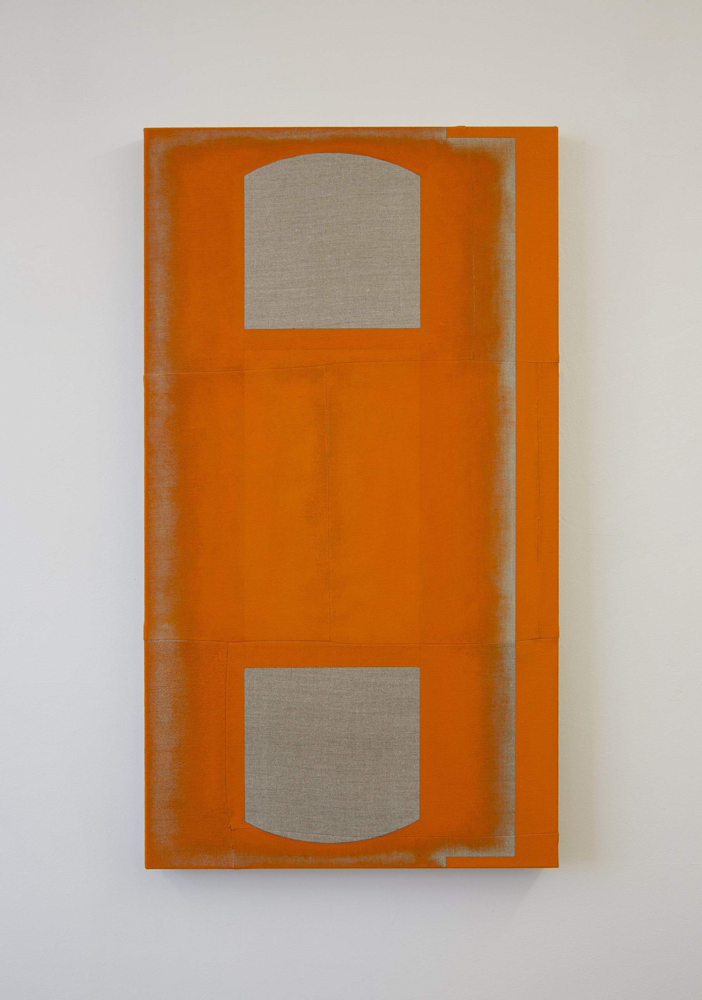
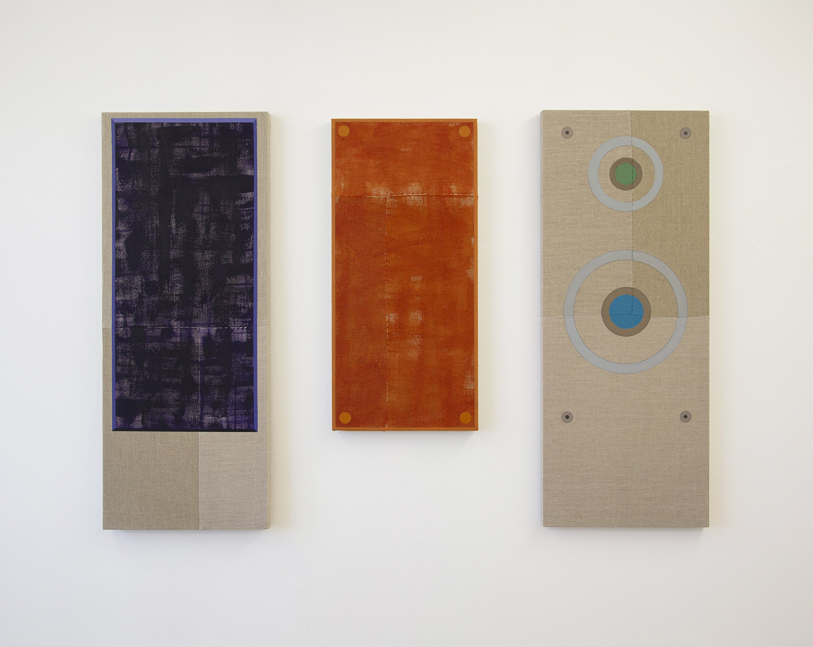
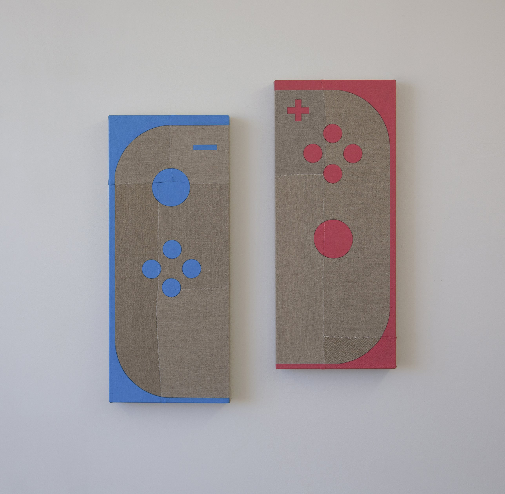
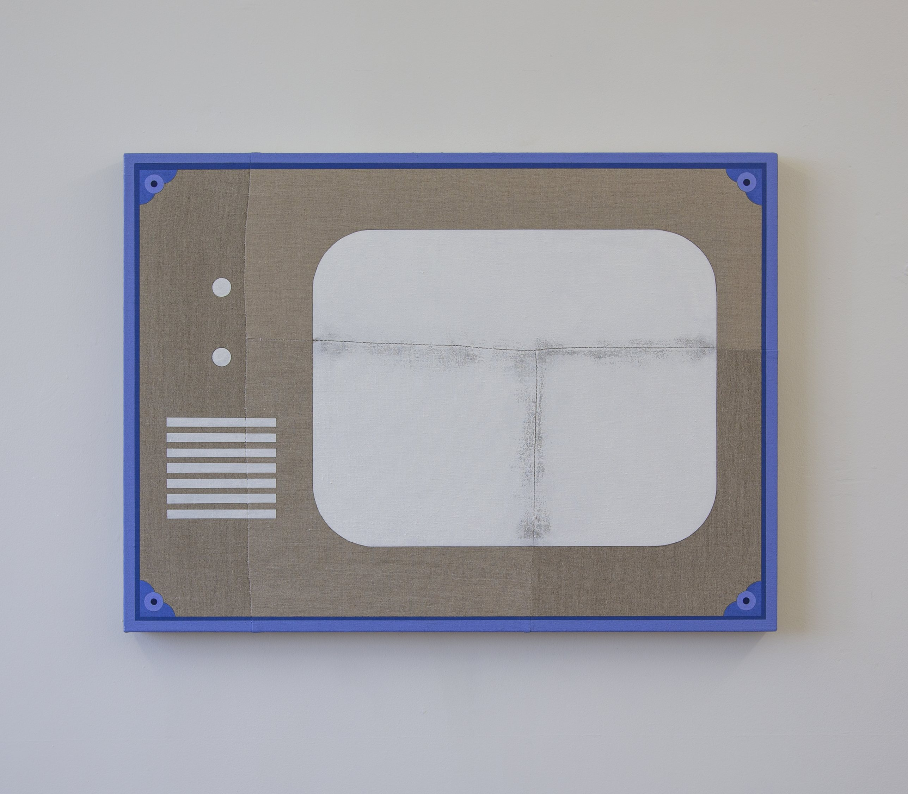
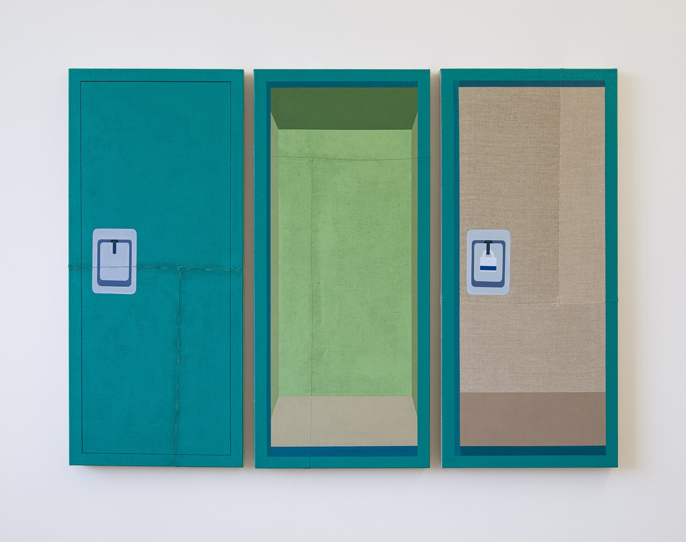
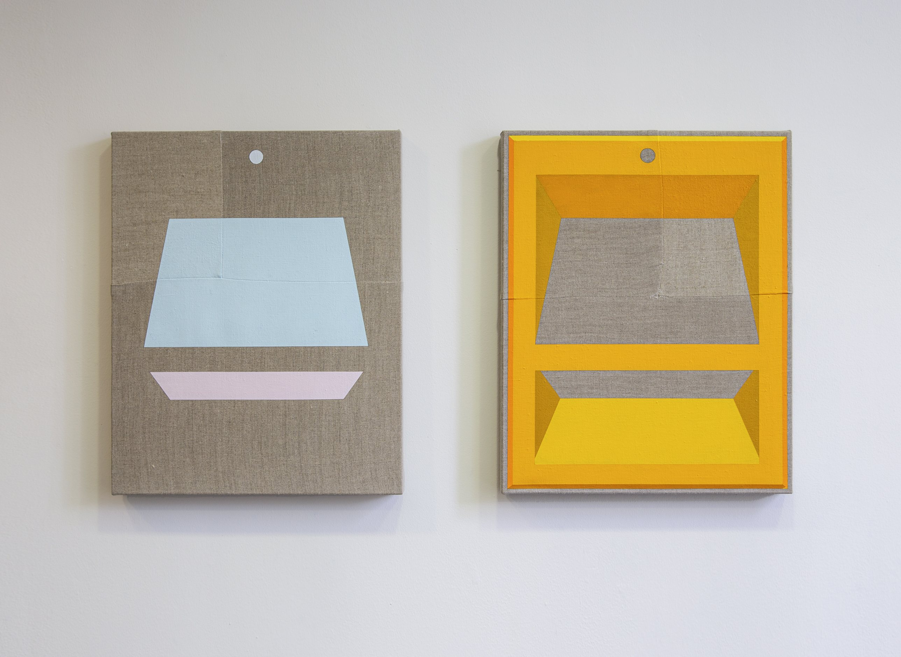

Woven Memory
The exhibition
The paintings


91 × 51 cm · acrylic on linen


101 × 41 cm each (left and right), 76 × 36 cm (middle), 3 parts · acrylic on linen


60 × 25 cm each, 2 parts · acrylic on linen


55 × 75 cm · acrylic on linen
Not the Preloved shown in the Contemporary British Painting Prize 2022: a different canvas with the same title.


91 × 41 cm each, 3 parts · acrylic on linen
Also shown in the Viva Exhibition (2024).


50 × 40 cm each, 2 parts · acrylic on linen

50 × 40 cm each, 4 parts · acrylic on linen
Also shown in Unruly Encounters (2022).